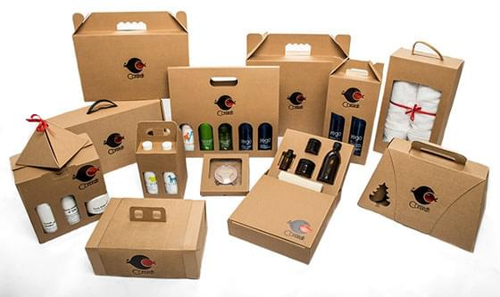

<!--#set var="title" value="Упаковка из картона • НекстПринт" -->
<!--#include virtual="/parts/header.html" -->
<section class="brand">
    <div class="container">
        <div class="title title_package-carton"><h3>Упаковка из картона</h3></div>
        <div class="row brand_row">
            <div class="col-md-6">
                <div class="item item_production">
                    <div class="item_wrap">
                        <a href="#">
                            
                            <div class="item_inner">
                                <div class="item_heading"><h4 id="cardboard">Упаковка из микрогофрокартона</h4></div>
                                <div class="item_text brand_text" id="cardboard"><p>Микрогофрокартон не содержит в составе химических и токсичных веществ, а также он обладает достаточной прочностью. Одним из основных преимуществ гофрированного картона является эстетическая привлекательность.</p></div>
                            </div>
                        </a>
                    </div>
                </div>
            </div>
            <div class="col-md-6">
                <div class="item item_production">
                    <div class="item_wrap">
                        <a href="#">
                            
                            <div class="item_inner">
                                <div class="item_heading"><h4 id="package-carton">Картонная упаковка</h4></div>
                                <div class="item_text brand_text" id="package-carton"><p>Картонную упаковку заказывают предприятия, которые заботятся об экологичности производимого продукта. Данный вид упаковки абсолютно безвреден для человека и окружающей среды, потому что не содержит химических и токсичных веществ.</p></div>
                            </div>
                        </a>
                    </div>
                </div>
            </div>
        </div>
        <p>
            <strong>Производство картонной упаковки</strong> — это высокотехнологичный и очень ответственный процесс. В нашей компании Вы можете заказать различные виды картонных коробок и использовать их для выбранных продуктов: шоколадные конфеты и плитки, чай и прочие. Наша высокопрофессиональная дизайн-студия разработает оригинальный дизайн, который будет соответствовать всем правилам розничной и оптовой торговли. При разработке дизайна в первую очередь учитываются все пожелания клиента.
        </p>
        <p>
            Компания <strong>“Некст Принт”</strong> предлагает предлагает Вам следующие виды услуг:
        </p>
        <ul>
            <li><i class="fa fa-check"></i><h5>Упаковка с выборочным или сплошным ультра-фиолетовым лаком;</h5></li>
            <li><i class="fa fa-check"></i><h5>Производство упаковки из макулатурного и целлюлозного картона;
            </h5></li>
            <li><i class="fa fa-check"></i><h5>Упаковка с конгревом;</h5></li>
            <li><i class="fa fa-check"></i><h5>Упаковка с тиснением фольгой.</h5></li>
        </ul>
    </div> 
</section>
<!--#include virtual="/parts/consultation.html" -->
<!--#include virtual="/parts/footer.html" -->